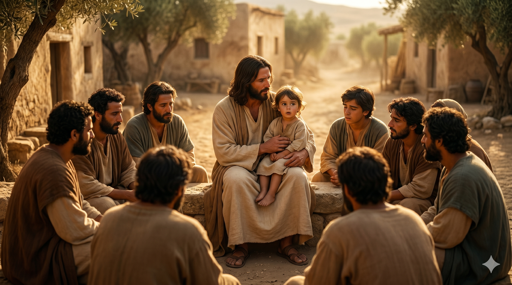

요한과 야고보가 예수 앞에 나아와 무릎 꿇고 간청하는 장면 — 주님의 눈에는 인자함과 안타까움이 동시에 담겨 있다.
여짜오되 주의 영광 중에서 우리를 하나는 주의 우편에, 하나는 주의 좌편에 앉게 하여 주옵소서... 예수께서 이르시되 너희 중에 누구든지 크고자 하는 자는 너희를 섬기는 자가 되고 너희 중에 누구든지 으뜸이 되고자 하는 자는 모든 사람의 종이 되어야 하리라. — 마가복음 10:37, 43-44
세베대의 두 아들 야고보와 요한이 예수께 나아와 조심스럽게 청합니다 — "선생님께서 영광 중에 계실 때, 우리를 주의 우편과 좌편에 앉게 해 주십시오." 이 요청은 단순한 욕심이 아닙니다. 두 사람은 예수를 참으로 믿었고, 그 나라가 반드시 임할 것이라고 확신했습니다. 그 믿음이 있었기에 좌석을 미리 예약하려 한 것입니다. 그러나 그 믿음 안에는 은밀한 야망이 뒤섞여 있었습니다. "그 좋은 자리를 내가 차지하고 싶다"는 본능이, 신앙의 언어로 포장되어 표출된 것입니다. 마태복음은 이 요청에 그들의 어머니까지 함께 나섰다고 기록합니다 — 아들들을 위한 어머니의 마음이 더해진 이 장면은 인간적이고도 씁쓸합니다.
다른 제자들이 이 소식을 듣고 분노했을 때, 예수께서는 그 자리 모두를 모아 앉히십니다. 그리고 세상의 방식과 하나님 나라의 방식을 대조하여 말씀하십니다. 세상에서는 크고자 하는 자가 군림하지만, 하나님 나라에서는 크고자 하는 자가 섬깁니다. "인자가 온 것도 섬김을 받으려 함이 아니라 도리어 섬기려 하고 자기 목숨을 많은 사람의 대속물로 주려 함이니라." 이것이 주님의 위대함의 정의입니다. 요한과 야고보가 구한 '영광의 자리'는 결국 십자가의 좌우편이었고, 그것이 어떤 잔인지를 그 순간 그들은 알지 못했습니다.

주님이 제자들 한가운데 무릎 꿇고 한 아이를 안으며 "으뜸이 되고자 하는 자는 종이 되어야 한다"고 말씀하시는 장면.
우리도 요한과 야고보처럼 믿음과 야망이 뒤섞인 채로 기도할 때가 있습니다. "하나님, 이 일이 잘 되게 해 주세요"라는 기도 안에 "나의 성공을 위해"라는 뜻이 은밀히 섞여 있을 때가 있습니다. 그것은 위선이 아닙니다 — 인간의 자연스러운 모습입니다. 중요한 것은 그 안을 들여다보고 솔직해지는 것입니다. 주님은 이 요청을 책망하시기 전에 먼저 질문하십니다 — "너희가 구하는 것을 너희가 알지 못하는도다." 우리가 구하는 것이 실제로 무엇인지, 주님 앞에서 정직하게 물어보는 일이 먼저입니다.
그리고 이 본문은 우리에게 위대함의 방향을 다시 정해 줍니다. 크고자 하는 열망 자체가 나쁜 것이 아닙니다. 주님은 그 열망을 없애라고 하지 않으셨습니다. 그 방향을 바꾸라고 하셨습니다 — 섬김 쪽으로. 오늘 내 삶에서 가장 낮은 자리에 있는 사람에게 다가가는 것이, 하나님 나라에서 가장 높은 자리로 걸어가는 길임을 기억하십시오.
크고 싶은가요? 섬기십시오.
으뜸이 되고 싶은가요? 종이 되십시오.
이것이 예수께서 정의하신 위대함입니다.